Software-Blender（场景灯光篇）
目录
资源
课程
【场景灯光篇】5.1 新手小白的超级布光宝典
灯光分为两种光：
- 世界光
- 场景光
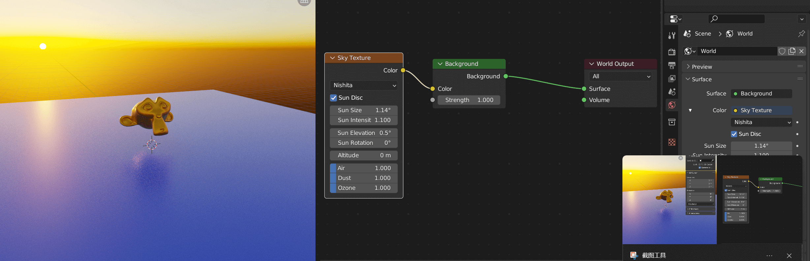
世界光也是一个材质节点，可以进行操作。
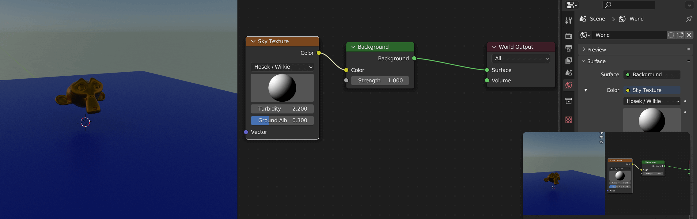
Sky Texture 有多种颜色属性可以选择：
- Preetham
- Hosek / Wilkie
- Nishita
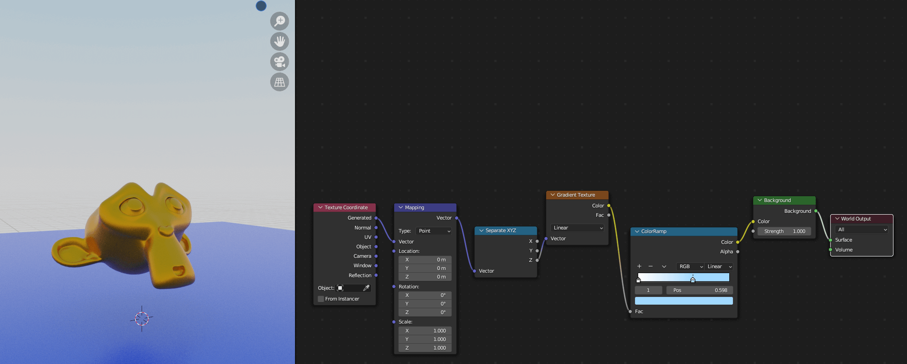
通过 ColorRamp 操作一个渐变天空材质。
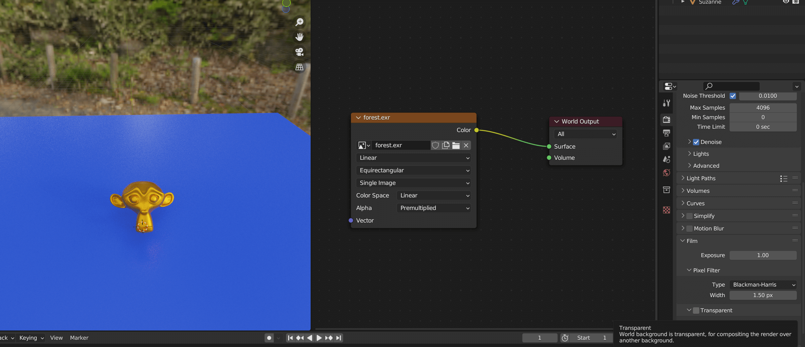
使用 HDRI 贴图创建世界光。
场景光有 4 种：
- Point 点状
- Sun 平行光
- Spot 聚光
- Area 柱体
先思考：场景出现在哪儿？
打世界光 定基调
- 打世界光的四种方法
- 修改默认背景节点（常用）
- 天空纹理
- 渐变纹理
- 环境纹理 - HDRI 贴图（常用）
- 打世界光的四种方法
打场景光
打场景光的四种光源
- 点光 Point
- 日光 Sun
- 聚光 Spot
- 面光 Area
新手如何打光？三点布光法
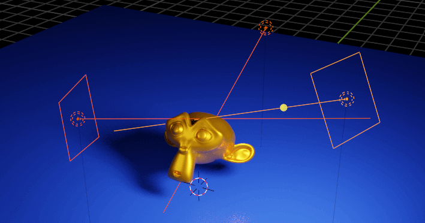
- 主光
- 辅助光
- 轮廓光
打光要有自己的思考（明暗对比 + 冷暖对比）
- 有主次 - 主次分明
- 有逻辑 - 用光帮你讲故事
- 有美感 - 多看多观察
【场景灯光篇】5.2 场景搭建 导入第三方素材
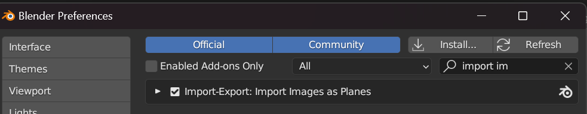
Blender 所带的 Import-Export 插件允许你在导入图片时直接绑定在一个平面上。
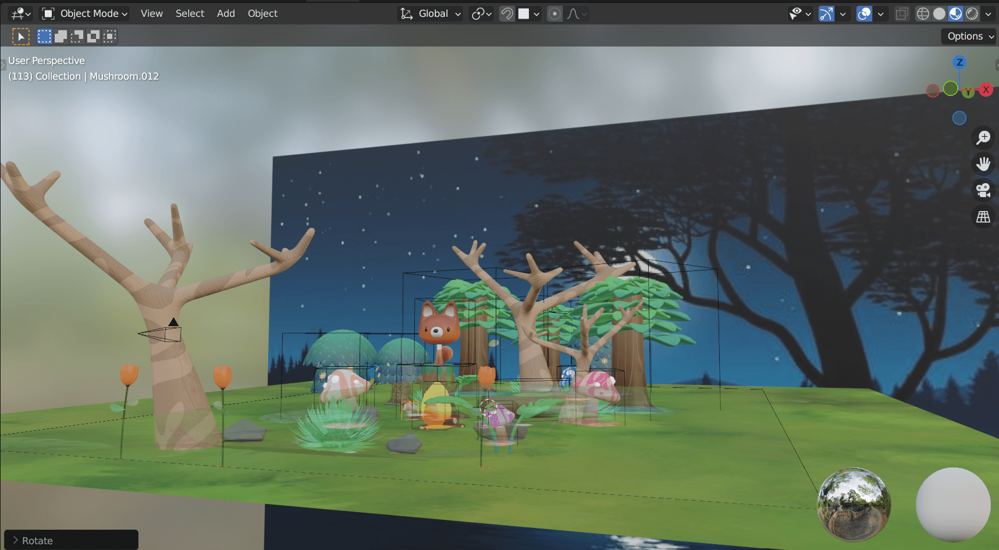
像 Unity 一样一阵操作摆场景。
【场景灯光篇】5.3 本章练习-场景布光
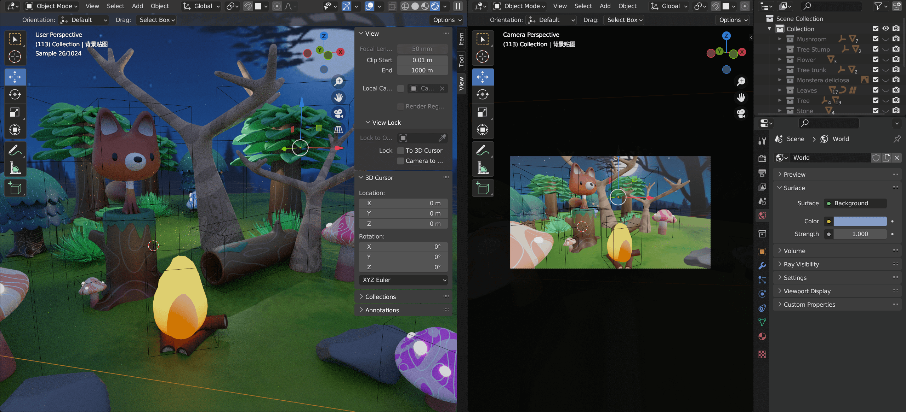
给环境光一个暗蓝色。
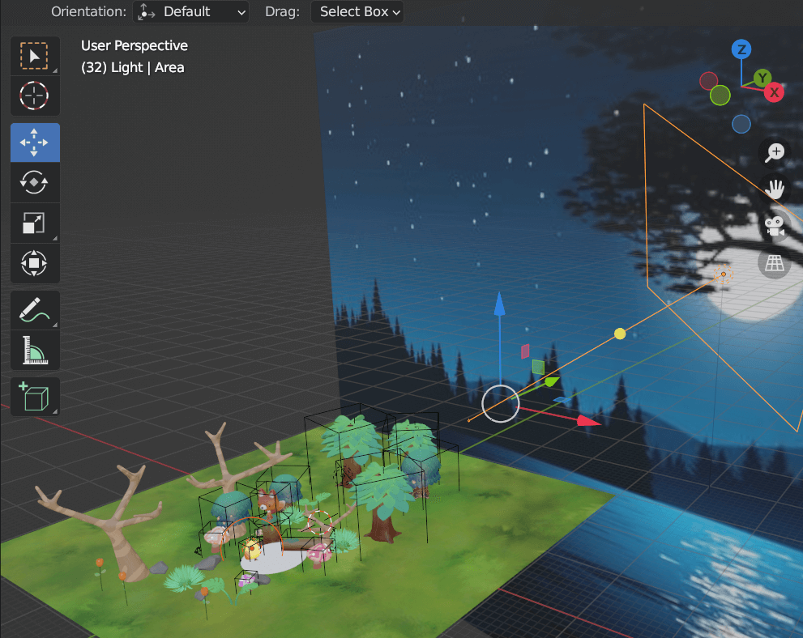
整点月光。
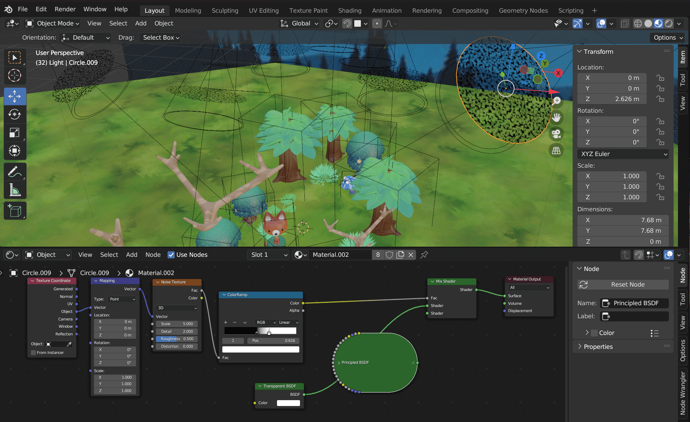
给树叶一个透明斑驳的效果。Spot 灯光前面加一个带 Noise Texture 和 Transparent BSDF 节点的透明材质的圆片。
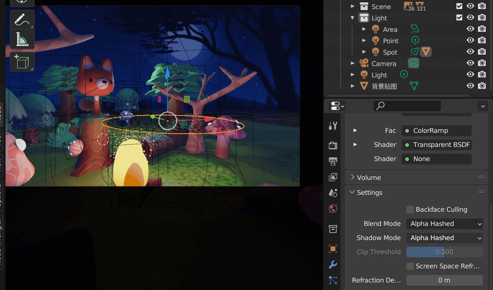
Eevee 渲染器下，这个透明效果只有材质中设定 Alpha Hashed 才有效（不然一坨黑）。Cycles 自带光线追踪所以不用。

用粒子系统增加一个草坪，以增加层次感。
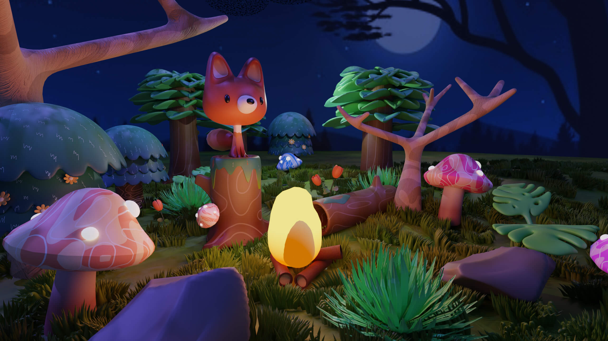
最终效果。